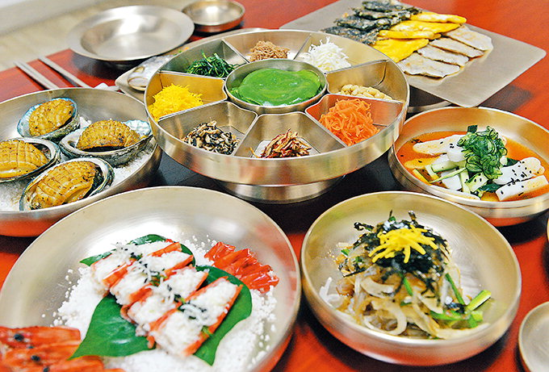

진주전통한정식

진주는 예로부터 민속예술에 가무와 술이 곁들여지는 연회잔치가 많이 베풀어졌던 고장으로 유명하다.
진주 교방문화와 더불어 발달한 진주전통한정식은 궁중에서 전래된 진주 특유의 음식으로 아름다운 상차림과 그 맛에 놀라는 조선 양반문화의 풍류가 만들어 낸 전통음식이다.
진주 교방음식으로 분리된 진주전통한정식은 임진왜란 때부터 진주비빔밥과 함께 대표적인 음식으로 손꼽힌다.
남해안의 싱싱한 해산물과 지리산에 자생하는 각종 산채들로 푸짐하고 화려한 진주전통한정식은 담백하면서도 개운하고 깔끔해 식도락가들의 구미를 당기게 하는 우리나라의 한정식의 결정판이다.
진주 교방음식으로 분리된 진주전통한정식은 임진왜란 때부터 진주비빔밥과 함께 대표적인 음식으로 손꼽힌다.
남해안의 싱싱한 해산물과 지리산에 자생하는 각종 산채들로 푸짐하고 화려한 진주전통한정식은 담백하면서도 개운하고 깔끔해 식도락가들의 구미를 당기게 하는 우리나라의 한정식의 결정판이다.